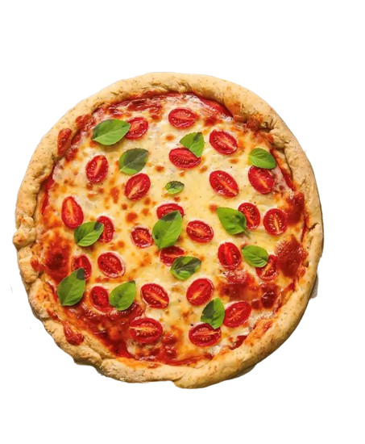

A Pizzaria da Nonna nasceu de uma receita de amor, tradição e muito sabor. Fundada por Nonna Aghata, uma italiana apaixonada pela arte de fazer pizzas, nossa história começa em 1930, quando ela chegou ao Brasil trazendo na mala suas receitas caseiras direto da região de Nápoles, na Itália. Em sua nova casa, em Curitiba, Nonna Aghata começou preparando pizzas para a vizinhança, sempre com ingredientes frescos, massa de fermentação lenta e aquele tempero que só uma verdadeira nonna conhece. O que começou como um pequeno forno em casa logo se tornou uma pizzaria de verdade — um lugar acolhedor, cheio de aromas e histórias. Hoje, quase 100 anos depois, a Pizzaria da Nonna segue viva e ainda mais saborosa. Agora comandada por seu filho, Afonso Nunes, mantemos a mesma paixão e respeito pelas origens. Cada pizza que sai do nosso forno carrega um pedacinho da Itália e muito carinho da nossa família para a sua.
Seja bem-vindo à Pizzaria da Nonna — onde tradição, sabor e família se encontram à mesa.
